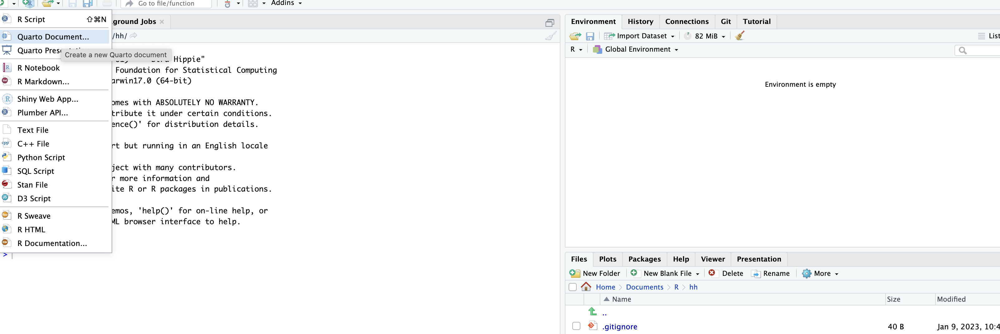
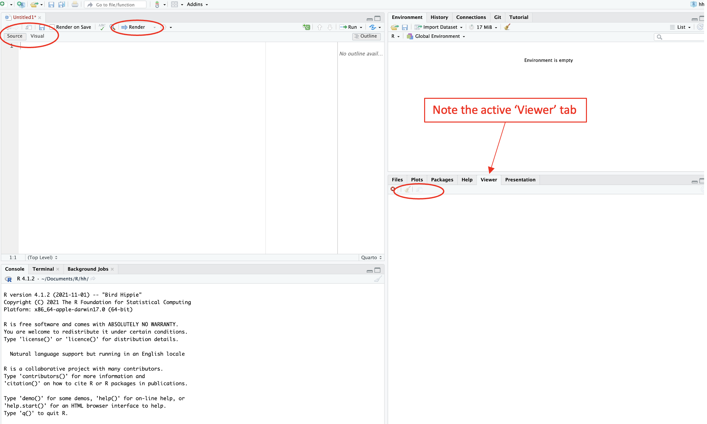

How to use this website?
Labs
Using Lab Files
The R code in this website is executable. Each of the lab files is a Quarto Markdwon or .qmd document.
If you have background in coding and are just looking for a piece of code, or if you want to browse the code, you can look at the Labs section and click on the relevant lab. The relevant code can be ran on R scrip, R markdown or Quarto markdown.
If you want to access the very .qmd documents to use and replicate the code, you should:
Use the latest version of
RStudio, at leastVersion: 2022.12.0+353or later on your computer.Within
RStudio, click onnew filedrop down menu and open a newQuarto Document(see the first figure), and name it.Once the
.qmddocument is opened, go to thesourcetab, erase the default code and paste the code from the corresponding lab file (from line 1 up to the final line). Then hitRender. You will see output in theViewermenu.You can click
Show in a new windowto open rendered code in your local browser window (see the second figure for highlighted commands).


Lab 1 and 2
These labs are not included here as they don’t involve any data analysis. First, let’s learn how to use the available code for lab files.
Lab 3: Descriptive statistics
Use Lab3-Descriptive-Stats.qmd.
Lab 4: EFA and CFA
Use Lab4-EFA-and-CFA.qmd.
Slides
Slides are made using revealjs on Quarto. The process of using them is similar as using the other .qmd documents explained above. Once they are opened in RStudio, the Present button from the Presentation tab can be used to open the presentation in the local browser - that can be presented from there.
Intro to Week 9
Use Intro-to-Week9.qmd.